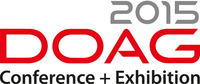
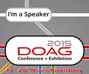

|
|
This was first published on https://blog.dbi-services.com/dbi-services-at-doag-2015 (2015-09-07)
Republishing here for new followers. The content is related to the the versions available at the publication date
As in the past years, dbi services is present at DOAG, and our speakers give 8 sessions, as well as one full day training. We are looking forward to meet you there. Here is the program.
 The agenda is online, here is a direct link to sessions by dbi services speakers: https://www.doag.org/konferenz/konferenzplaner/b.php?id=473721&locS=1&q=dbi
The titles are here but look at the agenda for when and where.
| Jerome Witt | Oracle12c result cache: the good, the bad and the ugly cases |
| David Hueber | Data Recovery Advisor in Details |
| David Hueber | Oracle over Docker |
| Franck Pachot | All about locks: DML, DDL, foreign key, online operations, |
| Gérard Wisson | Oracle WebLogic Monitoring mit SNMP/WLDF |
| Hervé Schweitzer | Oracle GoldenGate Konfiguration in der DR-Umgebung geschützt |
| Daniel Westermann | Automated RAC Setup with Cobbler and Virtual Box |
| Alain Lacour & Arnaud Berbier | Application Continuity |
| Hervé Schweitzer & Nicolas Jardot | Oracle Database Perfomance Tuning – Wie angehen? (Fa. dbi services) |
Remember where we are?
Booth 242 at the second level. Please come by.
Please, come to talk, about technology, about our services, trainings, SLAs. We like to share and learn.
Don’t forget to register: http://www.doag.org/en/events/konferenzen/doag-2015.html for DOAG. It’s a great European event.
{kind=link}